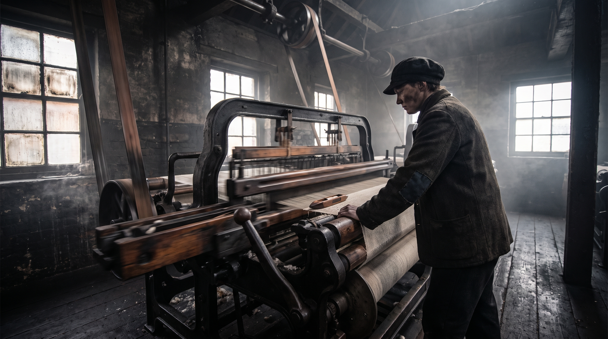
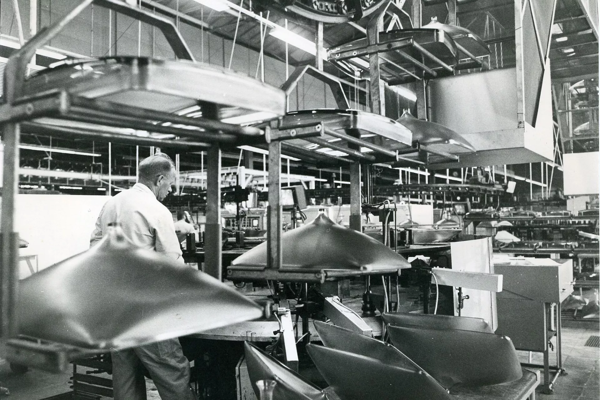
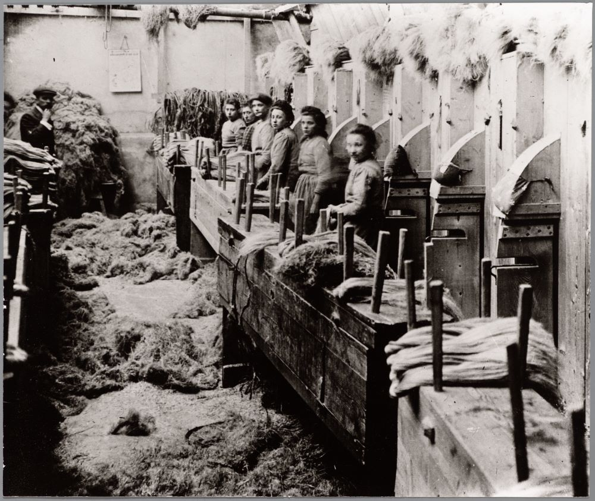

Kies een hoofdstuk
Werkt ook prima op je iPad

Hoofdstuk 1
De Industriële Revolutie in Engeland
Van spinnewiel tot stoommachine: hoe fabrieken Engeland veranderden.

Hoofdstuk 2
De Industriële Revolutie in Nederland
Waarom Nederland achterbleef — en hoe Unilever, Shell en Philips alsnog groot werden.

Hoofdstuk 3
De sociale verhoudingen in Nederland
Kinderarbeid, vakbonden, kiesrecht en de beurskrach van 1929.

Hoofdstuk 4
Welvaart voor iedereen
Van de Hongerwinter en Marshallhulp tot de handelseconomie van nu — 5 tijdvakken.